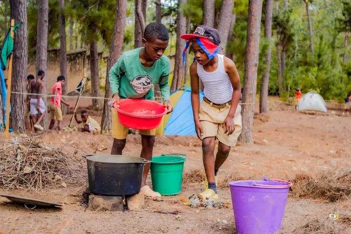

NOTRE RAISON D'ÊTRE
Éduquer la jeunesse malgache par la méthode scout de Lord Baden-Powell, enracinée dans la foi catholique et le service envers les autres.
LE SCOUTISME
Le scoutisme, fondé par Lord Robert Baden-Powell en 1907, est un mouvement éducatif mondial. Il propose aux jeunes de devenir des citoyens responsables, autonomes et solidaires à travers le jeu, l'action concrète et la vie en plein air.
Le scoutisme catholique ajoute à cette méthode une dimension spirituelle essentielle : la rencontre personnelle avec le Christ, la vie sacramentelle, la prière et le service inspiré de l'Évangile.
Notre groupe vit cette mission au cœur d'Andrainjato Fianarantsoa, formant chaque semaine environ 100 jeunes des Hautes Terres.

« Essayez de laisser ce monde un peu
meilleur que vous ne l'avez trouvé. »
— Baden-Powell
METHODE SCOUT
Six piliers qui structurent toute notre pédagogie d'éducation par l'action.
Le socle moral du scout : engagement personnel, parole donnée, code de vie partagé.
La patrouille comme cellule de base. On apprend en faisant ensemble, on grandit par la responsabilité.
Apprendre en faisant — Learning by doing. Pas de théorie sans expérience vécue.
Chaque jeune avance à son rythme, étape par étape, à travers défis et badges concrets.
La nature comme cadre éducatif : autonomie, débrouillardise, respect du vivant et émerveillement.
Une relation éducative — les chefs accompagnent sans imposer, guident par l'exemple.
Scout Catholique de Madagascar
Au-delà de la méthode scoute, notre groupe vit et exige une vie spirituelle forte, au service du Christ et de l'Église.
Temps quotidiens et célébrations qui rythment la vie du groupe.
Approfondissement de l'Évangile et de la doctrine catholique adapté à chaque âge.
Bonne action quotidienne, engagement paroissial, aide concrète aux plus démunis.
Fondement de toute action : aimer Dieu et son prochain comme soi-même.